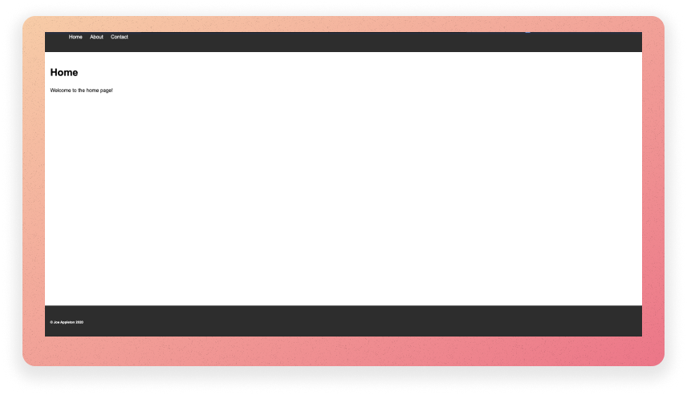
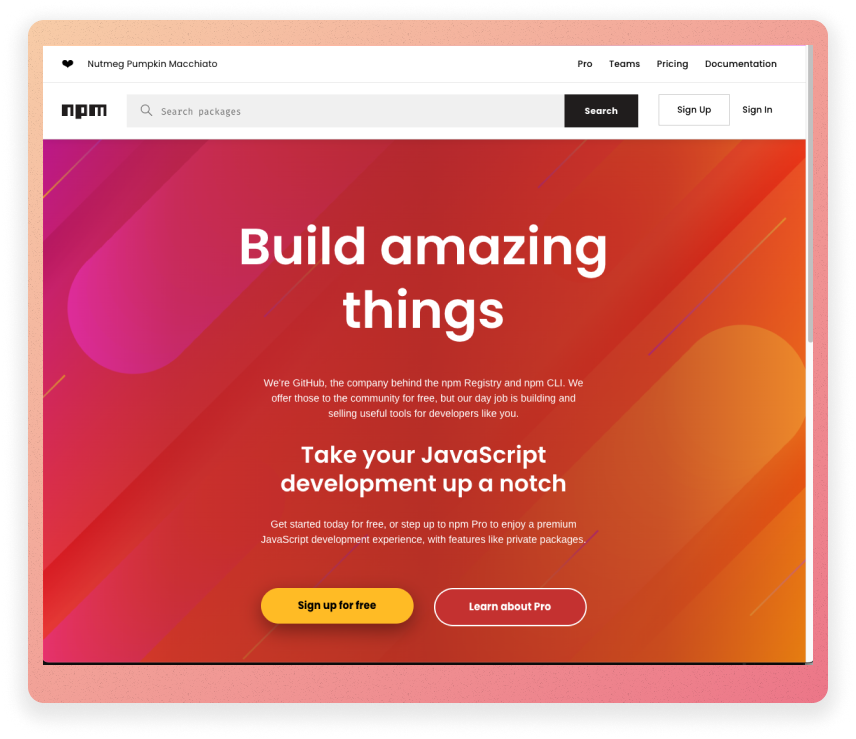
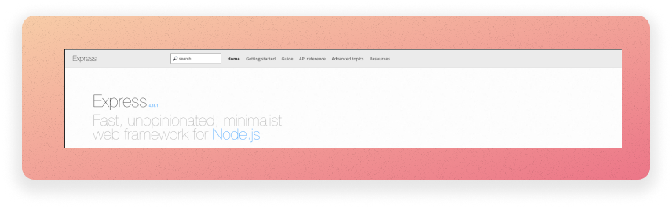
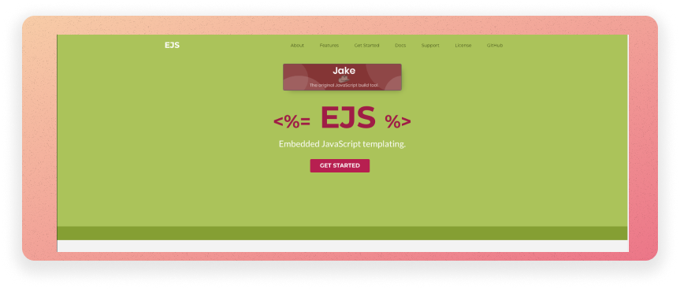

This is what we'll be building.
In this lab, you'll construct a simple web application. You'll use the Express framework to create a web server, and you'll use ejs templates to create templated web pages.
Last week, we created some simple JavaScript programs. We ran these programs in the Node.js environment. For instance, the following program prints "Hello World" to the console:
console.log("Hello World");
example of a simple program called hello_world.js
We can run this program by typing node hello_world.js in the terminal.
Before you start this week's lab, ensure you have NodeJS configured on your computer. If you have not done this, follow my guide here

The NPM package manager website (https://www.npmjs.com/)
Node.js has a package manager called npm which comes bundled with your node installation. It is similar to Pip in Python or Maven in Java.
We can use npm to install packages that we can use in our programs.
One of the reasons I love JavaScript is it has a rich package ecosystem.
Think of packages as open-source, free bolt-ons to our programs.
At the time of writing, there are over 1.3 million packages. You can explore packages by visiting the NPM repository.
This week, we are going to use the packages (express, ejs, chalkjs and nodemon) to build a simple web application. We'll learn more about these packages, and how to include them in our projects, as we go along.
lab_9, this is where you will store all of the files for this lab.lab_9 folder.It all starts with a package.json file. This file contains information about your project and the packages that it depends on. It also contains a list of scripts that you can run. In this part of the lab, we are going to create a package.json file and install a package called chalk. chalk is a package that we can use to add colour to the text that we print to the console. We'll use it to make our terminal outputs a little more interesting.
The hello world program running in the VS Code terminal. Notice how it's green because we are using the chalk package.
To create a package.json file:
lab_9 folder. However, check this by typing pwd and pressing enter. If it is not pointing to the root of the lab_9 folder, use the cd command to navigate to the root of the lab_9 folder.npm init and press enter. You'll see some prompts keep pressing enter to use the defaults.package.json file in your lab_9 folder. This file contains information about your project and the packages that it depends on. It also contains a list of scripts that you can run. We'll look at this in more detail later.We can now install the chalk package:
lab_9 folder, type npm install chalk@4 and press enter. This command installs the chalk package and saves it as a dependency in the package.json file.node_modules folder has been created. This folder contains the chalk package and any other packages that it depends on. You should also see that the package.json file has been updated to include chalk in the list of dependencies. Finally, you should see a package-lock.json file has been created. Note, you never need to edit these files or directories. They are created and updated automatically by npm.node_modules folders; you can, however, delete it and run npm install to reinstall all of the packages that your project depends on. As such, there is you should not commit this folder to your git repository or submit it as part of your assessment.lab_9 folder, create a file called exercise_0_3.js. Add the following code to the file:/**
* Import the chalk package from the node modules_folder, notice how we don't need to use an absolute path.
*/
const chalk = require("chalk");
/**
* Use the chalk package to print a blue message to the console.
*/
console.log(chalk.blue("Hello world!"));
node exercise_0_3.js and press enter. You should see a blue message printed to the console. Try and change the message to green!If you got stuck: Click Here to See the Solution
Nodemon is a package we can use to automatically restart our Node.js programs when we make changes to them. This is useful because it means we don't have to keep restarting manually.
To understand why we need to install Nodemon, let's create a more sophisticated Node.js program.
Up to this point, we've not really created any Node.js programs. We've just been running JavaScript files in the Node.js environment. The power of Node.js comes from the fact that we can use it to create web servers. This means we don't need to rely on a third-party web server such as Apache or Nginx.
Let's create a Web Server and try and understand why we need to install Nodemon.
exercise_0_4.js in the lab_9 folder. Add the following code to the file:/**
* Import the http package, this is a core Node.js package so it doesn't need to be installed.
*/
const http = require("http");
const server = http.createServer(); // Create a server object.
/**
* Import the chalk package from the node modules folder; we installed this in the previous exercise.
*/
const chalk = require("chalk");
/**
* Listen for requests and respond with a message. Notice how we are using a trusty arrow function (req,res) => and passing it into sever.on and the second argument.
*/
server.on("request", (req, res) => {
res.end("hello world");
});
server.listen(8000, function () {
/*
* Print a message to the console when the server starts.
*/
console.log(chalk.blue("Server is listening on port 8000"));
});
Do not worry if the code above seems somewhat alien to you; much of it may be new. In short, we are setting up web server listening on the localhost port 8000. When a client connects, we simply return hello world.
In the terminal, type node exercise_0_4.js and press enter. You should see a message printed, saying that the server is listening on port 8000. This means that the server is running and waiting for requests. If you open a web browser and navigate to http://localhost:8000 you should see a message saying "hello world". Pat yourself on the back, you've just created a web server using Node.js!
Notice how, in the terminal, your program is still running. Make a change to your code, for instance update "hello world" to "Hello, World!". If you refresh or revisit http://localhost:8000, you will see that the change has not been applied. This is because the server is not restarting when we make changes to the code. We have to stop the server and restart it manually (press ctrl + c in the terminal and then type node exercise_0_4.js and press enter). This is a pain! We want the server to restart automatically when we make changes to the code.
This is where Nodemon comes in. Nodemon is a package that we can use to automatically restart our Node.js programs when we make changes to them.
To install Nodemon, stop the existing program from running: press ctrl + c in the terminal. Then type npm install -D nodemon and press enter. The -D flag tells npm to install the package as a development dependency. If you check the package.json file you should see that Nodemon has been added to the list of development dependencies. These types of dependencies are only required during development and are not required when the application is deployed to a production environment.
Next, we need to update the package.json file to tell it to use Nodemon to run our program. Open the package.json file and add the following line to the scripts section (there is already a test script in there; you only need to add the start script), make sure you add a comma after the test script, before you add the start script:
"scripts": {
"test": "echo \"Error: no test specified\" && exit 1",
"start": "nodemon exercise_0_4.js"
},
The scripts section of the package.json file. Nodemon is installed in the node_modules directory. However, notice how we don't need to use an absolute path to reference it.
npm run start and press enter. You should see a message printed to the console saying that the server is listening on port 8000. Now, if you make a change to the code and refresh the page, you should see that the change has been applied. This is because Nodemon is automatically restarting the server when we make changes to the code.tip
Did you get a Error: listen EADDRINUSE: address already in use :::8000 error. This means your application is still running from the previous step. Press ctrl + c in the terminal to stop it. Or, if all fails, use a different port number (e.g., 8001).
If you got stuck: Click Here to See the Solution

The Express website (https://expressjs.com/)
Above, we created a simple web server using Node.js. To expand on this and create a more sophisticated web application we need to use a framework. A framework is a set of tools that we can use to build applications. We will use a framework called Express.
Express is a Node.js package that we can use to build web applications. It provides a set of tools that make it easier to handle requests and responses. Further, it handles concerns such as routing and middleware.
According to the the express documentation, "express is a minimal and flexible Node.js web application framework that provides a robust set of features for web and mobile applications". In other words, it provides a lightweight framework to assist in the development of web applications.
From this point on, we are going to be building a simple web application. The entry point for this web application will be index.js. We will incrementally build up this application over the next few exercises.
npm install express and press enter.index.js, this will be the entry point to our application.const express = require("express");
const app = express();
const port = 8000;
app.get("/", (req, res) => {
res.send("Hello, World!");
});
app.listen(port, () => {
/*
Print a message to the console when the server starts. Notice how we are using a template literal to insert the port number into the string. This is a new feature of JavaScript that allows us to insert variables into strings. We use the backtick character to denote a template literal. We then use the ${} syntax to insert the variable.
*/
console.log(`Example app listening at http://localhost:${port}`);
});
The above example uses the express package to create a new web-server that listens on port 8000 (l.9). We can then set up listeners to respond to any given HTTP request. Above, we listen for a get request to the base URL of our server (l.5).
package.json file and update the scripts section so that it looks like this: "scripts": {
"test": "echo \"Error: no test specified\" && exit 1",
"start": "nodemon index.js"
},
In the VS code terminal, type npm run start and press enter. You should see a message printed to the console saying that the server is listening on port 8000. If you open a web browser and navigate to http://localhost:8000 you should see a message saying "Hello, World!". So far, we are not doing anything too exciting. However, we have created a web server using Node.js and Express.
ctrl + c in the terminal.Add a new route to the application. For example, you could add the following code to the below the your existing route in index.js:
app.get("/about", (req, res) => {
res.send("This is the about page");
});
/contact, /about).If you got stuck: Click here to see the solution
Let's update the application so that it returns a HTML page instead of a plain text message. We are, after all, making web application.
Express makes serving static files easy. For instance, let's assume that we are making simple website. When we receive an HTTP get request to the root path ("/") of our application we can return an index.html file (see the sample below):
const express = require("express");
/**
* Import the path module, this is a core Node.js package so it doesn't need to be installed.
*/
const path = require("path");
const app = express();
const port = 8000;
app.get("/", (req, res) => {
/**
* serve the index.html file from the root of the project. Notice how we use the path module to resolve the path to the * file - this is imported at the top of the file. Using the path module is a good practice as it ensures that the path * is correct across different operating systems.
*/
res.sendFile(path.resolve(__dirname, "index.html"));
});
app.listen(port, () => {
console.log(`Example app listening at http://localhost:${port}`);
});
example of a simple express application that serves a HTML file. Make sure you have an index.html file in the root of your project. Further, make sure you have imported the path module at the top of your file!
<!DOCTYPE html>
<html>
<head>
<title>My First Web Page</title>
</head>
<body>
<h1>home page</h1>
</body>
</html>
a simple html page called index.html. This needs to be in the root of your project. In this case, the lab_9 folder.
lab_9 folder set up and serve an html page, for each of the routes you created earlier (e.g., /about and /contact). For instance, when we visit http://locahost:8000/about; about.html should be served. You will need to create a HTML file for each route you created earlier (about, contact, and index). Place these files in the root of your project.Currently, we cannot serve static assets such as CSS and images in our HTML pages. In order to configure this functionality we need to use some middleware.
Middleware can be considered functionality that runs between an HTTP request being received and a response being sent.
Express has a number of built-in middleware functions, and we can use them by calling app.use() and passing the middleware function as an argument.
Below is an example of how to use the express.static() middleware function, allowing us to serve static assets:
const express = require("express");
const app = express();
const port = 8000;
/**
* Serve static files from the public folder
*/
app.use(express.static("public"));.
.... // the rest of your code
Above, express looks up the files relative to the static directory, so the name of the static directory is not part of the URL. For instance, if we place the image foo.jpeg in the public folder we would reference it in index.html like this, <img src="foo.jpeg" >.
So, if we had the following:
|- lab_9
|- index.js
|- index.html
|- public
|- foo.jpeg
We could reference foo in our index.html page like this:
<!DOCTYPE html>
<html>
<head>
<title>My First Web Page</title>
</head>
<body>
<img src="foo.jpeg" />
<h1>home page</h1>
</body>
</html>
Remember to place the image in the public folder, and you should be able to reference it in your HTML page using the <img src="filename.extension"> tag. Remember to use the correct file extension (e.g., .jpeg, .png, .gif).
Did you get stuck: Click here for the solution

The EJS website (https://ejs.co/)
While serving plain HTML files provides us with a means to present a website, we do not have much flexibility and sophistication. For instance, how do we inject data into our html pages? Furthermore, how can we reuse sections of our HTML pages (e.g., the header and the footer)? Templating languages to the rescue!
In this module, we will explore one such language, Embedded JavaScript templating; otherwise know as EJS.
npm install ejs and press enter. You should be used to this by now!Now you've installed EJS, yo can now tell express to render html pages using ejs. Below is a full example:
const express = require("express");
const path = require("path");
const app = express();
const port = 8000;
const ejs = require("ejs");
/**
* we are telling express to use ejs as our view engine. This means that express will look for ejs files in the views folder.
*/
app.set("view engine", "ejs");
/**
* we are telling express to use the public folder to serve static files. This means that express will look for static files in the public folder.
*/
app.use(express.static("public"));
app.get("/", (req, res) => {
res.render("index");
});
app.listen(port, () => {
console.log(`Example app listening at http://localhost:${port}`);
});
In the above example, express will assume that we have an index.ejs file in a views folder, which lives in the root directory of your project.
EJS, is a superset of HTML. This means, to get the above example to work, we can simply rename our index.html file to index.ejs and move it to our views folder.
Using EJS, we now have some dynamic capabilities within our HTML views. The first thing you might want to do is extract a header into a shared folder such as views/common/header.ejs we could then share it amongst our pages as follows:
<!-- views/index.ejs -->
...
<body>
<%- include('common/header'); %>
<!-- notice how we emit the .ejs extension this will assume we have a file called header.ejs in the views/common -->
<h1>Home Page</h1>
<img src="images/test.jpeg" alt="wtf" />
</body>
...
<!-- views/common/header.ejs -->
<nav>
<ul>
<li><a href="/">Home</a></li>
<li><a href="about"></a>About</li>
<li><a href="contact">Contact</a></li>
</ul>
</nav>
The project structure of the above example would look like this:
|- lab_9
|- index.js
|- public
|- images
|- test.jpeg
|- views
|- common
|- header.ejs
|- index.ejs
.ejs.http://locahost:8000/contact, contact.ejs should be rendered.views/common folder and place your header and footer in it.If you got stuck: Click here for the solution
Can you add some CSS and create some basic styles for your application (e.g., a background colour, a font, and some padding, make the links vertical). You will need to place your css file in the public folder you created. You will also need to update your HTML files to reference the CSS file. For instance, you could add the following line to the head of your HTML files:
<link rel="stylesheet" href="style.css" />
If you are still a little unsure about css and html, then you should go over my pre-learning video and resources I've created: https://surreylearn.surrey.ac.uk/d2l/le/lessons/252843/topics/2881545